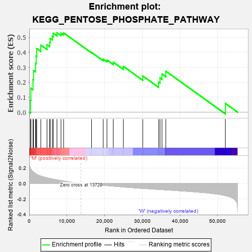
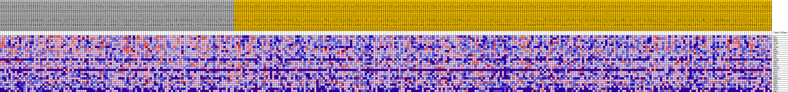
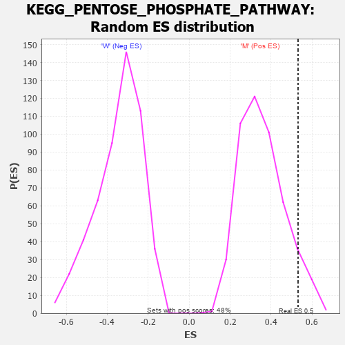

| Dataset | MUC16.MUC16.cls#M_versus_W.MUC16.cls#M_versus_W_repos |
| Phenotype | MUC16.cls#M_versus_W_repos |
| Upregulated in class | M |
| GeneSet | KEGG_PENTOSE_PHOSPHATE_PATHWAY |
| Enrichment Score (ES) | 0.5312546 |
| Normalized Enrichment Score (NES) | 1.4919751 |
| Nominal p-value | 0.06903765 |
| FDR q-value | 0.21085657 |
| FWER p-Value | 0.776 |

| PROBE | DESCRIPTION (from dataset) | GENE SYMBOL | GENE_TITLE | RANK IN GENE LIST | RANK METRIC SCORE | RUNNING ES | CORE ENRICHMENT | |
|---|---|---|---|---|---|---|---|---|
| 1 | GPI | na | 342 | 0.193 | 0.0800 | Yes | ||
| 2 | PGM2 | na | 437 | 0.184 | 0.1604 | Yes | ||
| 3 | PFKP | na | 996 | 0.150 | 0.2173 | Yes | ||
| 4 | ALDOA | na | 1160 | 0.143 | 0.2783 | Yes | ||
| 5 | TKT | na | 1666 | 0.126 | 0.3255 | Yes | ||
| 6 | ALDOC | na | 1840 | 0.121 | 0.3764 | Yes | ||
| 7 | RPE | na | 1984 | 0.117 | 0.4259 | Yes | ||
| 8 | PFKM | na | 3068 | 0.095 | 0.4488 | Yes | ||
| 9 | PRPS2 | na | 4713 | 0.073 | 0.4514 | Yes | ||
| 10 | PGD | na | 5442 | 0.064 | 0.4670 | Yes | ||
| 11 | DERA | na | 5559 | 0.063 | 0.4931 | Yes | ||
| 12 | ALDOB | na | 6137 | 0.057 | 0.5083 | Yes | ||
| 13 | RBKS | na | 6382 | 0.055 | 0.5283 | Yes | ||
| 14 | PFKL | na | 7358 | 0.046 | 0.5313 | Yes | ||
| 15 | PRPS1 | na | 8429 | 0.038 | 0.5286 | No | ||
| 16 | TALDO1 | na | 9115 | 0.032 | 0.5305 | No | ||
| 17 | TKTL1 | na | 16526 | -0.008 | 0.3999 | No | ||
| 18 | RPIA | na | 19630 | -0.023 | 0.3542 | No | ||
| 19 | PGLS | na | 20618 | -0.028 | 0.3488 | No | ||
| 20 | G6PD | na | 22296 | -0.035 | 0.3342 | No | ||
| 21 | PRPS1L1 | na | 24977 | -0.046 | 0.3063 | No | ||
| 22 | PGM1 | na | 30111 | -0.064 | 0.2421 | No | ||
| 23 | H6PD | na | 34331 | -0.078 | 0.2004 | No | ||
| 24 | FBP1 | na | 34694 | -0.079 | 0.2290 | No | ||
| 25 | RPEL1 | na | 35221 | -0.080 | 0.2554 | No | ||
| 26 | TKTL2 | na | 36234 | -0.083 | 0.2743 | No | ||
| 27 | FBP2 | na | 52035 | -0.157 | 0.0585 | No |

